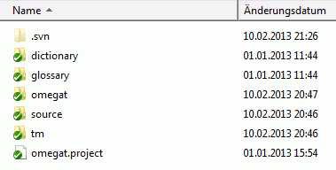

В ОмегаТ функция совместной работы над переводом реализована на основе систем управления версиями (version control system, VCS), которые широко применяются при разработке программного обеспечения для управления изменениями в коде программ и беспрепятственной совместной работы в рамках команды. ОмегаТ поддерживает две популярные системы управления версиями: Apache Subversion (иногда называемую SVN) и Git. Для команды разработчиков использование систем управления версиями имеет следующие преимущества:
-
несколько членов команды могут одновременно работать над одним проектом и при этом не мешать друг другу;
-
они могут использовать общую память переводов и общий глоссарий;
-
По умолчанию каждые три минуты всем членам команды становится доступна обновлённая версия перевода;
-
система автоматически управляет версиями общих файлов;
-
конфликты, например, различные варианты перевода одного сегмента или термина глоссария, можно отслеживать и разрешать;
Для начала дадим определение некоторым терминам:
-
сервер системы управления версиями: сервер SVN или Git, на котором хранятся материалы проекта. Сервер может находиться и в локальной сети, но в большинстве случаев он будет доступен в Интернете, т. е. будет иметь URL-адрес. Один из членов команды, администратор проекта, должен уметь настраивать всё необходимое на стороне сервера: подготавливать систему управления версиями, импортировать проекты ОмегаТ, устанавливать необходимые права для членов команды, разрешать конфликты и т. д.;
-
клиент системы управления версиями: для доступа к серверу, на компьютере руководителя проекта должна быть установлена клиентская программа SVN или Git. Для ОС Windows имеются популярные клиенты TortoiseSVN и TortoiseGit. Схожие программы доступны и для других операционных систем (GNU/Linux, OS X);
-
репозиторий: место, где хранятся общие файлы проекта, либо в локальной сети, либо в Интернете. Члены команды подключаются к нему через клиентские программы системы управления версиями;
-
создание рабочей копии (извлечение документов из репозитория): операция, в результате которой на вашем компьютере появляется рабочая копия файлов, хранящихся в репозитории. Информация о создании рабочих копий хранится на сервере, благодаря чему последующая фиксация изменений (см. ниже) может производиться обычным образом;
-
фиксация изменений (создание новой версии): после того, как в рабочую копию файлов были внесены изменения, их можно отправить обратно в репозиторий (зафиксировать изменения) так, чтобы они стали доступны остальным членам команды. На стороне сервера проводится проверка, чтобы возможные конфликты, которые возникают, когда два участника команды переводят один и тот же сегмент, были разрешены;
-
администратор: член команды, ответственный за создание и поддержание рабочего репозитория, т. е. за обеспечение работы сервера. Чтобы избежать проблем, по крайней мере на начальном этапе, подобными правами должен обладать только один человек;
-
пользователь: член команды, работающий над общим проектом.
Для работы с системой SVN можно либо установить её на ваш собственный сервер, либо воспользоваться услугами стороннего хостинга. При использовании стороннего сервиса следует учитывать возможность утечки конфиденциальной информации, так как вы будете загружать переводимые документы на сервер, который вы не можете контролировать. С другой стороны, этого можно избежать, создав свой собственный SVN-сервер, например, если у вас уже установлен сервер Apache и другие необходимые программы (например, VisualSVN).
После того, как вопрос в выбором сервера будет решён, руководитель проекта должен установить SVN-клиент на свой компьютер. Пользователям ОС Windows рекомендуется воспользоваться TortoiseSVN. Пользователи Mac могут загрузить SVN-клиент с веб-сайта SourceForge. Для пользователей GNU/Linux доступно руководство «Команды и скрипты Subversion» (на английском языке).
В данном руководстве описывается использование бесплатного (для команды из двух человек) SVN-сервера ProjectLocker. Заметьте, что создатель репозитория по умолчанию имеет права администратора. Для начала зарегистрируйтесь на сайте и запомните выбранное имя пользователя и пароль для будущих проектов.
-
Создайте новый проект на ProjectLocker.
-
Введите название и описание репозитория. (в нашем примере это
«OmegaT»и«OmegaT SL Localization»). -
Выберите
-
Нажмите
Перейдите к разделу «Projects» (проекты) вашей учётной записи. В описании проекта («Project Services») будет указан URL-адрес, по которому SVN-клиенты могут подключиться к вашему новому SVN-серверу. Также здесь можно добавлять новых членов команды и устанавливать им права. Заметьте, что для этого члены команды тоже должны быть зарегистрированы (в бесплатной версии ProjectLocker команда может состоять только из двух человек).
Проектами можно управлять в соответствии с вашим стилем работы и потребностями. Как и в случае с обычными проектами ОмегаТ,
для переводов с разными языковыми парами следует создавать разные проекты. Однако и в рамках одной языковой пары лучше размещать
переводы по разным тематикам или от разных клиентов в отдельных проектах. С другой стороны, в одном репозитории можно иметь
подкаталоги Проект1, Проект2 и т. д., при этом проекты будут иметь общие каталоги tm, glossaryи dictionary.
Например, в этом примере для простоты создаётся один репозиторий для одного проекта ОмегаТ. .
Изначально репозиторий создаётся пустым. Сначала вы должны создать пустой каталог SVN-клиента. Создайте на своём компьютере пустой каталог, в котором будет находиться ваш проект и щёлкните по нему правой кнопкой мыши. Выберите TortoiseSVN > Checkout (TortoiseSVN > Создание рабочей копии). Появится диалоговое окно, как на иллюстрации ниже.

В поле URL of repository (URL-адрес репозитория) введите адрес, полученный от ProjectLocker. Убедитесь, что в поле Checkout directory (каталог рабочей копии) указан только что созданный пустой каталог и нажмите OK. После завершения работы клиента вы можете убедиться, что в новом каталоге теперь содержится подкаталог «.svn», а на иконке появился небольшой зелёный символ «OK», обозначающий, что содержимое каталога синхронизировано с репозиторием.
Далее следует добавить в этот каталог файлы проекта ОмегаТ. Следующие файлы должным быть доступны всем членам проекта:
-
основной файл проекта
omegat.project; -
файл памяти переводов проекта
omegat\project_save.tmx; -
содержимое каталога исходных файлов;
-
файл со специальными настройками файловых фильтров
omegat\filters.xml.
Также администратор проекта может добавить каталоги tm, glossary и dictionary. Возможно, стоит добавить и файлы ignored_words.txt и learned_words.txt из каталога omegat. Не стоит добавлять файлы с расширением bak, файл project_stats.txt и project_stats_match.txt из каталога omegat, так как они будут лишь занимать место на сервере. Скорее всего, то же самое относится и к содержимому каталога target.
После того, как вы скопируете все необходимые файлы в каталог с рабочей копией репозитория, зелёный символ «ОК» сменится на красный восклицательный знак, что означает, что в рабочей копии произошли изменения, которые не были зафиксированы в репозитории. Чтобы теперь обновить содержимое репозитория, следует сделать следующее:
-
добавить скопированные файлы в рабочую копию репозитория: щёлкните правой кнопкой мыши по каталогу рабочей копии и выберите TortoiseSVN > Add (TortoiseSVN > Добавить). В появившемся диалоговом окне оставьте настройки по умолчанию и нажмите OK. Появится окно «Add finished!» (добавление завершено!), как на иллюстрации ниже:

Теперь содержимое каталога рабочей копии должно иметь соответствующие пометки:

-
зафиксировать изменения в репозитории: щёлкните правой кнопкой мыши по каталогу рабочей копии и выберите SVN Commit…(зафиксировать изменения…). Откроется новое диалоговое окно. Отметьте нужные изменения, т. е., скопированные каталоги и файлы.

Добавьте описание изменений в поле «Message» (сообщение) и нажмите OK. Появится новое окно, в котором будет отображаться прогресс фиксации изменений. Сначала содержимое рабочей копии будет отправлено на сервер, а затем будет произведена синхронизация каталога «.svn» с текущим состоянием репозитория;
-
обновить файлы рабочей копии из локальной копии репозитория: сейчас, в подкаталоге «.svn» находится локальная копия репозитория, но файлы рабочей копии проекта пока не синхронизированы. Чтобы обновить рабочую копию, щёлкните правой кнопкой мыши по главному каталогу проекта и выберите SVN Update (обновить из SVN). Проверьте содержимое каталога, чтобы убедиться, что локальная копия репозитория и соответствующие файлы и подкаталоги соответствуют последним версиям на сервере:

После размещения проекта на сервере члены команда должны лишь настроить ОмегаТ для доступа к общему проекту. Сначала нужно выбрать пункт меню Проект > Загрузить командный проект…: ОмегаТ извлечёт из репозитория последнюю версию проекта и сохранит её в локальном каталоге. Учётные данные сохраняются автоматически, так что вводить их второй раз не придётся. Если вы используете GNU/Linux и ОмегаТ по прежнему каждый раз запрашивает учётные данные, попробуйте установить флажок «Принудительно сохранять пароль в виде обычного текста».
При последующем использовании будет достаточно просто открыть этот проект. ОмегаТ распознает его как командный и будет синхронизировать нужные файлы автоматически. По умолчанию синхронизация будет происходить каждые три минуты.